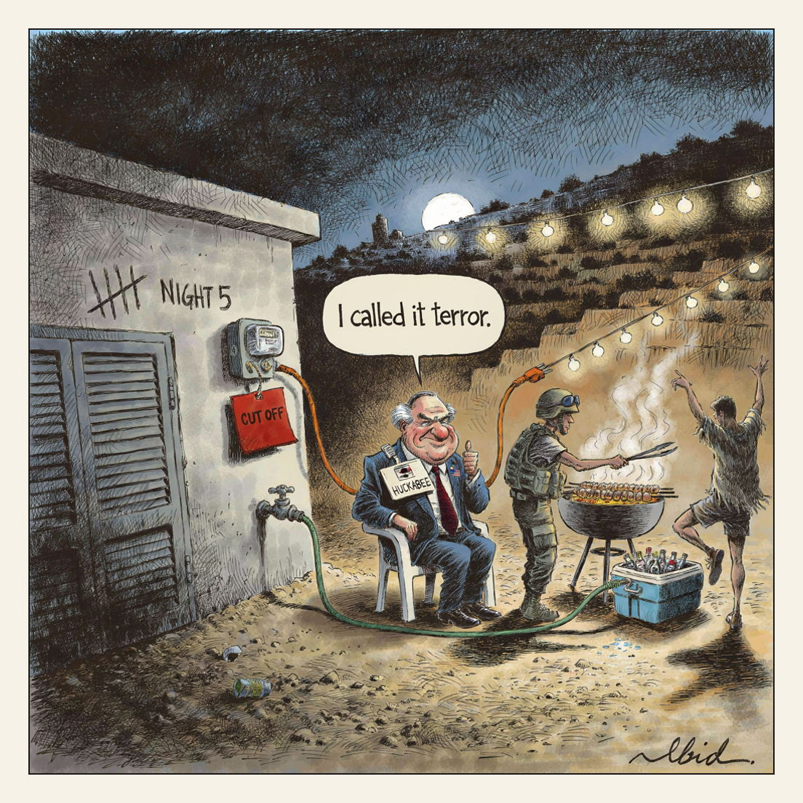

Two outposts dismantled. One Israeli detained.
Night Five in Qusra

The UN human rights office says Israeli settlers have besieged three Palestinian families — 15 people including two children — in Qusra, occupied West Bank, for a fifth night, with their water and electricity cut off since Sunday. OHCHR said the actions are 'supported or acquiesced to by Israel, the Occupying Power' and warned time is running out before the families are forcibly displaced. The Israeli military said it dismantled two illegal outposts and detained one Israeli; US ambassador Mike Huckabee called the settlers' actions 'terror'.